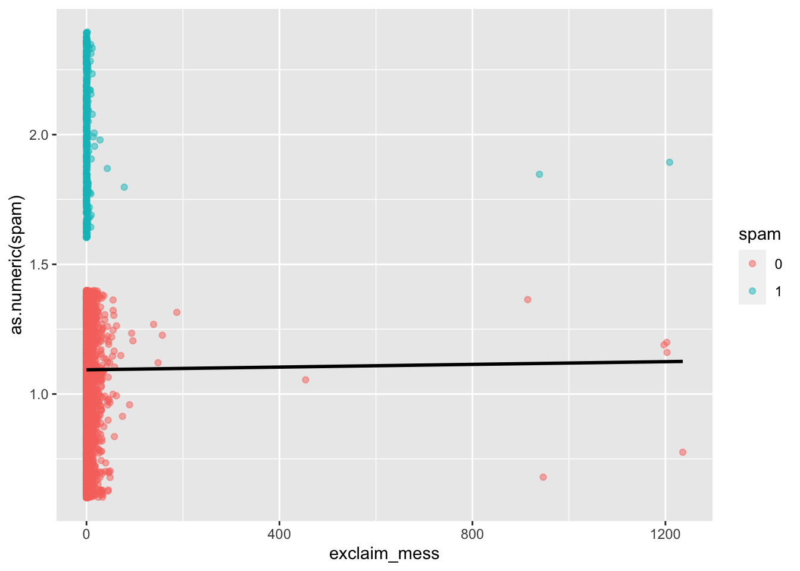
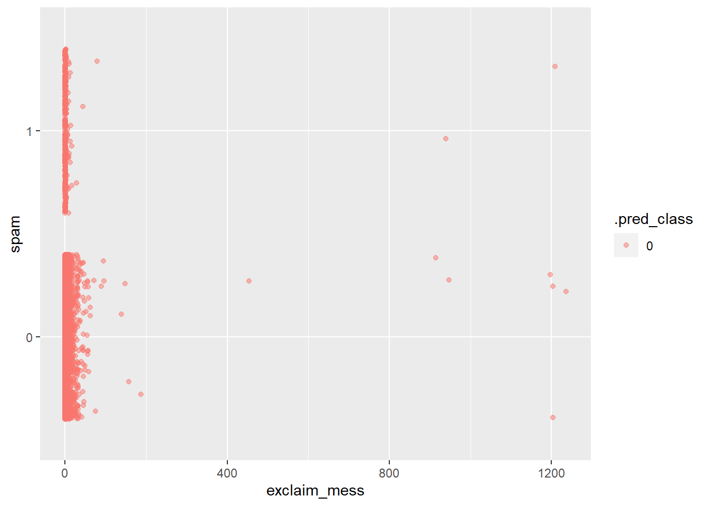
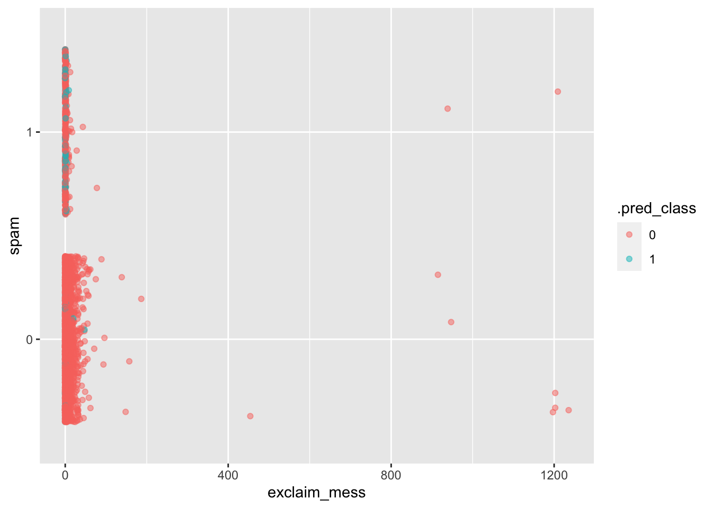

library(tidyverse)
library(tidymodels)
library(openintro)Building a spam filter
Application exercise
Answers
Learning goals
- Use logistic regression to fit a model for a binary response variable
- Fit a logistic regression model in R
- Use a logistic regression model for classification
To illustrate logistic regression, we will build a spam filter from email data.
The data come from incoming emails in David Diez’s (one of the authors of OpenIntro textbooks) Gmail account for the first three months of 2012. All personally identifiable information has been removed.
glimpse(email)Rows: 3,921
Columns: 21
$ spam <fct> 0, 0, 0, 0, 0, 0, 0, 0, 0, 0, 0, 0, 0, 0, 0, 0, 0, 0, 0, …
$ to_multiple <fct> 0, 0, 0, 0, 0, 0, 1, 1, 0, 0, 0, 0, 0, 0, 0, 0, 0, 0, 0, …
$ from <fct> 1, 1, 1, 1, 1, 1, 1, 1, 1, 1, 1, 1, 1, 1, 1, 1, 1, 1, 1, …
$ cc <int> 0, 0, 0, 0, 0, 0, 0, 1, 0, 0, 0, 1, 0, 1, 2, 1, 0, 2, 0, …
$ sent_email <fct> 0, 0, 0, 0, 0, 0, 1, 1, 0, 0, 1, 0, 0, 1, 0, 1, 0, 0, 1, …
$ time <dttm> 2012-01-01 01:16:41, 2012-01-01 02:03:59, 2012-01-01 11:…
$ image <dbl> 0, 0, 0, 0, 0, 0, 0, 1, 0, 0, 0, 0, 0, 0, 0, 0, 0, 0, 0, …
$ attach <dbl> 0, 0, 0, 0, 0, 0, 0, 1, 0, 0, 0, 0, 0, 0, 0, 0, 0, 0, 0, …
$ dollar <dbl> 0, 0, 4, 0, 0, 0, 0, 0, 0, 0, 0, 0, 0, 0, 2, 0, 5, 0, 0, …
$ winner <fct> no, no, no, no, no, no, no, no, no, no, no, no, no, no, n…
$ inherit <dbl> 0, 0, 1, 0, 0, 0, 0, 0, 0, 0, 0, 0, 0, 0, 0, 0, 0, 0, 0, …
$ viagra <dbl> 0, 0, 0, 0, 0, 0, 0, 0, 0, 0, 0, 0, 0, 0, 0, 0, 0, 0, 0, …
$ password <dbl> 0, 0, 0, 0, 2, 2, 0, 0, 0, 0, 0, 0, 0, 0, 0, 0, 1, 0, 0, …
$ num_char <dbl> 11.370, 10.504, 7.773, 13.256, 1.231, 1.091, 4.837, 7.421…
$ line_breaks <int> 202, 202, 192, 255, 29, 25, 193, 237, 69, 68, 25, 79, 191…
$ format <fct> 1, 1, 1, 1, 0, 0, 1, 1, 0, 1, 1, 0, 1, 1, 1, 1, 1, 1, 0, …
$ re_subj <fct> 0, 0, 0, 0, 0, 0, 0, 0, 0, 0, 0, 1, 0, 1, 1, 1, 0, 1, 1, …
$ exclaim_subj <dbl> 0, 0, 0, 0, 0, 0, 0, 0, 0, 0, 0, 0, 0, 0, 0, 0, 1, 0, 0, …
$ urgent_subj <fct> 0, 0, 0, 0, 0, 0, 0, 0, 0, 0, 0, 0, 0, 0, 0, 0, 0, 0, 0, …
$ exclaim_mess <dbl> 0, 1, 6, 48, 1, 1, 1, 18, 1, 0, 2, 1, 0, 10, 4, 10, 20, 0…
$ number <fct> big, small, small, small, none, none, big, small, small, …The variables we’ll use in this analysis are
spam: 1 if the email is spam, 0 otherwiseexclaim_mess: The number of exclamation points in the email message
Goal: Use the number of exclamation points in an email to predict whether or not it is spam.
Exploratory data analysis
Let’s start by taking a look at our data. Create an density plot to investigate the relationship between spam and exclaim_mess. Additionally, calculate the mean number of exclamation points for both spam and non-spam emails.
ggplot(email, aes(x = exclaim_mess, fill = spam)) +
geom_density()
email |>
group_by(spam) |>
summarize(mean_ep = mean(exclaim_mess))# A tibble: 2 × 2
spam mean_ep
<fct> <dbl>
1 0 6.51
2 1 7.32Linear model – a false start
Suppose we try using a linear model to describe the relationship between the number of exclamation points and whether an email is spam. Write up a linear model that models spam by exclamation marks.
linear_reg() |>
fit(as.numeric(spam) ~ exclaim_mess, data = email)parsnip model object
Call:
stats::lm(formula = as.numeric(spam) ~ exclaim_mess, data = data)
Coefficients:
(Intercept) exclaim_mess
1.093e+00 2.604e-05 A visualization of a linear model is below.
ggplot(email, aes(x = exclaim_mess, y = as.numeric(spam), color = spam)) +
geom_jitter(alpha = 0.5) +
geom_smooth(method = "lm", se = FALSE, color = "black")`geom_smooth()` using formula = 'y ~ x'
- Your turn: Is the linear model a good fit for the data? Why or why not?
No.
Logistic regression – a different approach
Let \(p\) be the probability an email is spam (success).
- \(\frac{p}{1-p}\): odds an email is spam (if p = 0.7, then the odds are 0.7/(1 - 0.7) = 2.33)
- \(\log\Big(\frac{p}{1-p}\Big)\): “log-odds”, i.e., the natural log, an email is spam
The logistic regression model using the number of exclamation points as an explanatory variable is as follows:
\[\log\Big(\frac{p}{1-p}\Big) = \beta_0 + \beta_1 \times exclaim\_mess\]
The probability an email is spam can be calculated as:
\[p = \frac{\exp\{\beta_0 + \beta_1 \times exclaim\_mess\}}{1 + \exp\{\beta_0 + \beta_1 \times exclaim\_mess\}}\]
Exercises
Exercise 1
- Demo: Fit the logistic regression model using the number of exclamation points to predict the probability an email is spam.
log_fit <- logistic_reg() |>
fit(spam ~ exclaim_mess, data = email)
tidy(log_fit)# A tibble: 2 × 5
term estimate std.error statistic p.value
<chr> <dbl> <dbl> <dbl> <dbl>
1 (Intercept) -2.27 0.0553 -41.1 0
2 exclaim_mess 0.000272 0.000949 0.287 0.774- Your turn: How does the code above differ from previous code we’ve used to fit regression models? Compare your summary output to the estimated model below.
\[\log\Big(\frac{p}{1-p}\Big) = -2.27 - 0.000272 \times exclaim\_mess\]
We use logistic instead of linear regression.
Exercise 2
What is the probability the email is spam if it contains 10 exclamation points?
- Demo: Answer the question using R as a calculator
-2.27 - 0.000272 * 10[1] -2.27272exp(-2.27272) # p / (1 - p)[1] 0.10303160.103 / 1.103[1] 0.09338169- Demo: Answer the question using the
predict()function.
We can use the predict function in R to produce the probability as well.
ep_10 <- tibble(exclaim_mess = 10)
predict(log_fit, ep_10, type = "prob")# A tibble: 1 × 2
.pred_0 .pred_1
<dbl> <dbl>
1 0.906 0.0937Exercise 3
We have the probability an email is spam, but ultimately we want to use the probability to classify an email as spam or not spam. Therefore, we need to set a decision-making threshold, such that an email is classified as spam if the predicted probability is greater than the threshold and not spam otherwise.
Suppose you are a data scientist working on a spam filter. You must determine how high the predicted probability must be before you think it would be reasonable to call it spam and put it in the junk folder (which the user is unlikely to check).
Your turn: What are some trade offs you would consider as you set the decision-making threshold? Discuss with your neighbor.
Answers will vary.
augment(log_fit, email) |>
select(spam, exclaim_mess, .pred_class) |>
ggplot(aes(x = exclaim_mess, y = spam, color = .pred_class)) +
geom_jitter(alpha = 0.5)
Exercise 4
Fit a model with all variables in the dataset as predictors and recreate the visualization above for this model.
log_fit2 <- logistic_reg() |>
fit(spam ~ ., data = email)Warning: glm.fit: fitted probabilities numerically 0 or 1 occurredaugment(log_fit2, email) |>
select(spam, exclaim_mess, .pred_class) |>
ggplot(aes(x = exclaim_mess, y = spam, color = .pred_class)) +
geom_jitter(alpha = 0.5)